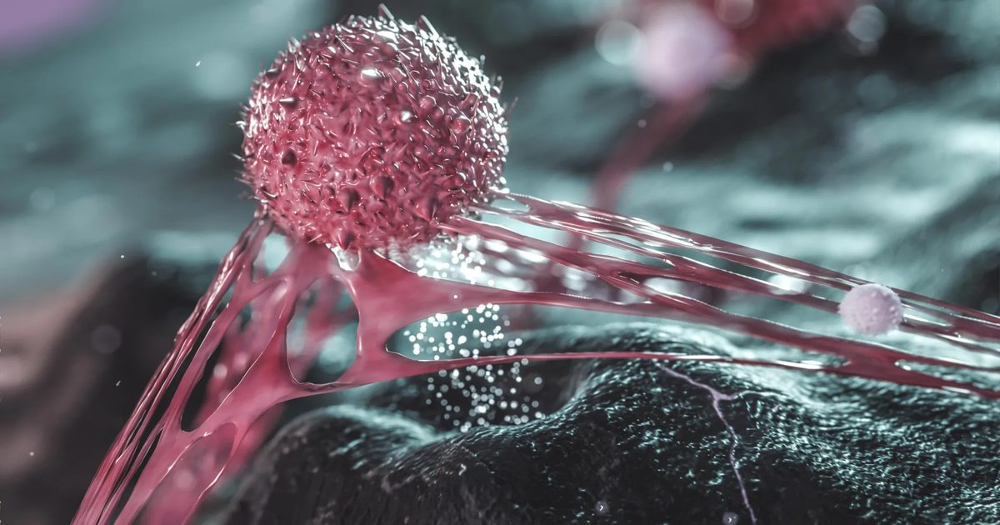

Фруктоза помогает раку яичников распространяться: новый механизм метастазов
Ученые Института Вистар обнаружили, что клетки рака яичников, пережившие платиновую химиотерапию, начинают выделять фруктозу. Этот сахар действует как сигнальная молекула: он подавляет синтез холестерина в соседних опухолевых клетках, ослабляя их сцепление и облегчая отшепку для метастазирования по брюшной полости.
Как выжившие после химиотерапии клетки управляют опухолью
Исследование, опубликованное в Nature Aging, показало, что так называемые сенесцентные (старовавшие) клетки рака после стандартной платиносодержащей химиотерапии не просто прекращают деление. Они остаются метаболически активными и выбрасывают в микросреду набор сигнальных веществ, которые рекрутируют соседние опухолевые клетки в программу агрессивного распространения. Эксперименты на доклинических моделях доказали: именно выделенные в среду молекулы, а не сами выжившие клетки, являются драйвером метастазирования — это впервые показано в живом организме, а не только в чашке Петри.
Чтобы идентифицировать ответственный фактор, команда использовала CRISPR-скрининг и метаболическое профилирование. Главным неожиданным посредником стала фруктоза — обычный сахар из фруктов, меда и кукурузного сиропа. Она действовала не как топливо, а как химический мессенджер: фруктоза подавляла синтез холестерина в соседних раковых клетках. Холестерин необходим для прочности клеточных мембран и адгезионных контактов, выполняющих роль биологического клея; его дефицит делает клетки подвижными и способными отшепнуться от первичной опухоли.

Роль добавленного сахара и статинов в доклинических моделях
В дополнительных экспериментах высокое потребление фруктозы с пищей — в дозах, сравнимых с регулярным употреблением сладких напитков на сиропе высокого фруктозного содержания — усиливало метастатические сигналы даже без предварительной химиотерапии. В США этот сироп может составлять от 8 до 20 процентов суточной калорийности, что делает диетический фактор массовым и модифицируемым. Авторы подчеркивают: прямая причинно-следственная связь между сахаром в рационе и скоростью прогрессирования рака у людей пока не установлена, клинических испытаний не проводилось.
Поскольку фруктоза действовала через снижение холестерина, исследователи проверили статины — широко назначаемые препараты для коррекции липидного профиля. Оказалось, что статины в моделях воспроизводили эффект фруктозы: они ослабляли межклеточные контакты, облегчая отшепку опухолевых клеток. Примерно 39 миллионов взрослых в США принимают статины, а рак яичников чаще всего развивается у женщин после менопаузы, которые часто уже находятся на таком лечении. Это не повод отменять препараты, но серьезный повод изучить их взаимодействие с химиотерапией в клинической практике.

Перспективы: другие локализации и метаболические мишени
Ученые предполагают, что описанный механизм — метаболическое перепрограммирование микросреды с ослаблением адгезии — может работать и при других брюшных онкологиях: раке поджелудочной железы, толстой кишки, печени. Эти опухоли также метастазируют внутри брюшной полости, контактируя с соседними органами и перитонеем. Новые эксперименты уже планируются для проверки этой гипотезы на моделях панкреатического, колического и гепатоцеллюлярного рака.
Если общность механизма подтвердится, это откроет путь к поиску терапевтических мишеней, блокирующих «побег» клеток от первичного очага. Одновременно возникает вопрос о пищевых стратегиях: может ли ограничение фруктозы замедлить прогрессирование? Пока ответов нет — метаболизм опухоли слишком сложен для простых рекомендаций, а клинические данные отсутствуют. Авторы работают над воспроизведением результатов в моделях других типов рака перед любыми переводами на практику.
Что это значит для онкологии и пациентов сейчас
Результаты не отменяют существующие протоколы лечения и не являются основанием для самостоятельного отказа от статинов или радикального устранения фруктозы из рациона. Доклинические модели не воспроизводят всю сложность человеческого организма, а холестерин выполняет множество жизненно важных функций вне контекста рака. Онкологи продолжают придерживаться доказательных схем, а новые данные интегрируются в планы будущих трансляционных исследований.
Главная ценность работы — в смене парадигмы: «спящие» после химиотерапии клетки оказываются активными архитекторами микросреды, рекрутирующими здоровые соседи в метастатический процесс через метаболические сигналы. Понимание этого кросс-толка между метаболизмом и механобиологией опухоли может привести к комбинированным схемам, где метаболические ингибиторы усиливают эффект цитостатиков и препятствуют рецидивам.
Коротко: Выжившие после химиотерапии клетки рака яичников выделяют фруктозу, снижая холестерин у соседей и помогая им отшепнуться для метастазирования. В моделях похожий эффект давали сладкие напитки и статины, но в людях этот механизм пока не проверяли клинически.
Как вы считаете, стоит ли онкологам уже сейчас обсуждать с пациентами ограничение добавленной фруктозы на фоне активного лечения?